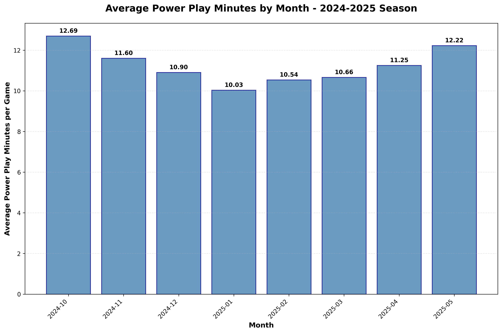

The start of every NHL season is filled with optimism. Every team has a clean slate, and fans are buzzing with excitement. But beyond the big-name signings and season predictions, there's a fascinating statistical trend that smart teams can use to get a jump on the competition: the early-season surge in power plays.
The data is clear, and it tells a compelling story. Let's dig in.
The Fact: More Power Plays in the Fall üèí
Looking at game data from the past two seasons, a distinct pattern emerges: average power play minutes per game are consistently highest in the first two months of the season (October and November) and then tend to decrease or level off as the year progresses.
In the 2023-2024 season, October saw an average of 14.64 power play minutes per game. This number dropped to 13.38 in November and then settled into a range between 11 and 12 minutes for the rest of the season.

Power play minutes per game by month for the 2023-2024 NHL season, showing the clear early-season spike.
The 2024-2025 season shows the same trend. It kicked off with 12.69 minutes in October, followed by 11.60 in November, before hovering in a lower range for the subsequent months.
The pattern continues in 2024-2025, confirming this isn't just a one-season anomaly.
It's important to note what this data represents. This isn't just total penalty minutes. These figures are the actual minutes a team spends on the power play, meaning they exclude offsetting penalties (where both teams are shorthanded) and 10-minute misconducts. This data specifically tracks the moments when one team has a crucial man advantage.
The Hypothesis: Why the Early Whistles? ü§î
So, we have the facts. But why does this happen? Here's my hypothesis:
Referees Setting the Standard
At the beginning of a season, referees may be instructed to call the game strictly "by the book." This sets a clear standard across the league for what is and isn't a penalty. By establishing a firm line early on, they condition players on how the game will be officiated, which can lead to fewer penalties later as players adjust.
Players Shaking Off the Rust
Players are human. Coming off a long offseason, their timing might be slightly off. This can lead to more "lazy" stick infractions like hooking, slashing, or tripping as they reach for pucks instead of moving their feet. Their discipline might also be a bit looser before the intensity of the playoff race truly kicks in. I can look at the data in a future article to see the types of penalties that are given to see if this is true.
This combination of strict officiating and player readjustment likely creates the perfect storm for a penalty-filled start to the season.
The Opportunity: Win in October, Celebrate in April üéâ
This trend isn't just a quirky statistic; it's a strategic opportunity. If teams know that more power plays are coming in the first couple of months, why not prepare for it?
This is where the pre-season comes in. Instead of treating it as just a time to get line combinations sorted out, teams should place an extraordinary focus on their special teams—both the power play (PP) and the penalty kill (PK).
A power play unit that's already clicking in October can be a devastating weapon, turning those early-season penalty calls into goals and, more importantly, wins. Likewise, a sharp, cohesive penalty kill can frustrate opponents and keep your team in games when the whistles aren't going your way.
Those two points you bank from an overtime win in October—fueled by a power-play goal—are worth just as much as two points earned in a desperate push in March. Gaining this early advantage can be the difference between making the playoffs and booking an early tee time. By anticipating the statistical trend, teams can turn the referees' early-season diligence into a powerful competitive edge.
The data doesn't lie. The opportunity is there. The question is: which teams will be smart enough to seize it?